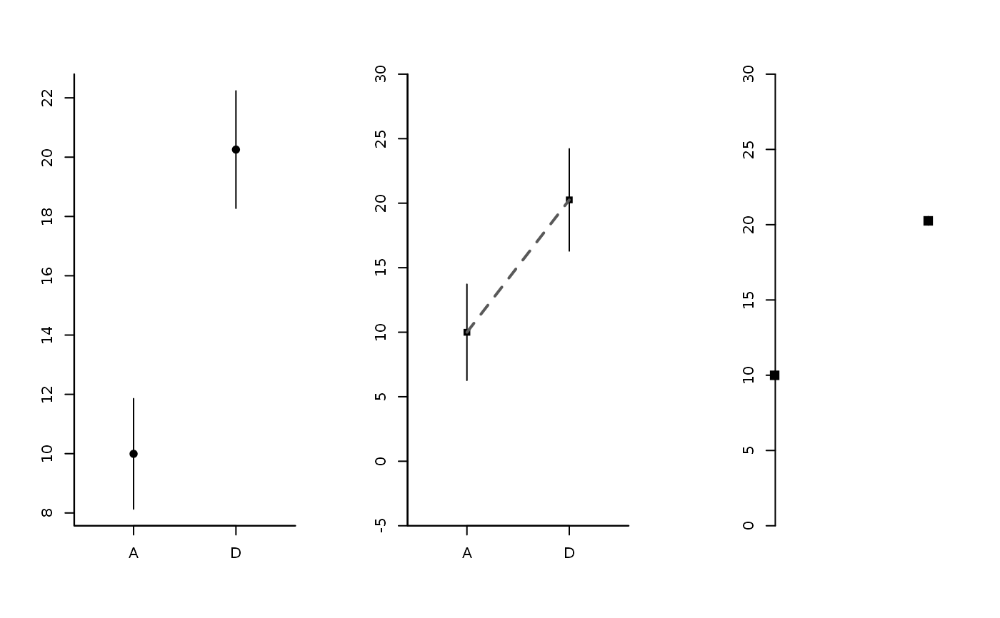

Plots a set of means computed based on a dataset and draw error associated.
plotMeans( formula, data, FUN_err = stats::sd, add = FALSE, seqx = NULL, draw_axis = TRUE, col_err = par()$col, col_pt = par()$col, cex_pt = 1, connect = FALSE, args_con = list(), ... )
| formula | a formula, see |
|---|---|
| data | a data frame (or list) from which the variables in formula should be taken. |
| FUN_err | the function that assess uncertainty. Default function is |
| add | logical. should images be added on the current graph ? If FALSE a new plot is created. |
| seqx | the x coordinates of the means to be plotted, if |
| draw_axis | logical. If |
| col_err | color of the lines that reflect uncertainty. |
| col_pt | color of the points that stand for means. |
| cex_pt | magnification coefficient of the points that stand for means. |
| connect | logical. If TRUE then mean are linked using a lines. |
| args_con | a list of parameters that are used to customize the lines that links the means. |
| ... | Further graphical parameters (see |
# Example: dataset <- data.frame(dat=c(rnorm(50, 10, 2), rnorm(50, 20, 2)) , grp=rep(c('A','D'), each=50)) graphics::par(mfrow=c(1,3)) plotMeans(dat~grp, data=dataset, pch=19) # plotMeans(dat~grp, data=dataset, FUN_err= function(x) sd(x)*2, pch=15, ylim=c(-5,30), yaxs='i', connect=TRUE, args_con=list(lwd=2, lty=2, col='grey35')) # ser <- function(x) sd(x)/sqrt(length(x)) plot0(c(0,4), c(0,30))plotMeans(dat~grp, data=dataset, FUN_err=ser, pch=15, draw_axis=FALSE, add=TRUE, seqx=c(.5,3.5), mar=c(6,6,1,1), cex=1.4)